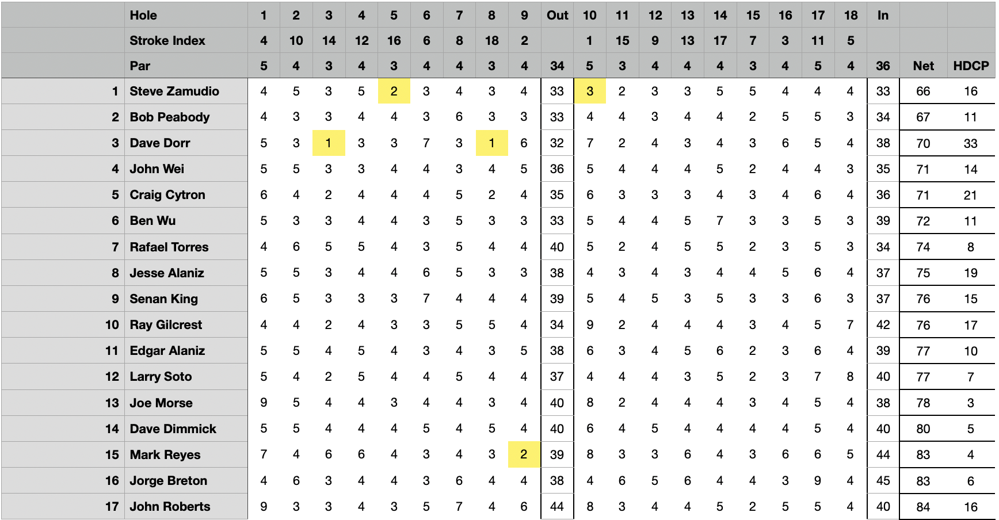

August Newsletter at De Laveaga
| Place | Name | Net Score |
|---|---|---|
| 1st Place | Steve Zamudio | 66 |
| 2nd Place | Bob Peabody | 67 |
| 3rd Place | Dave Dorr | 70 |
| 4th Place | John Wei (T) | 71 |
| 4th Place | Craig Cytron (T) | 71 |
| Place | Name | Net Score |
|---|---|---|
| 1st Place | Steve Zamudio | 66 |
| 2nd Place | Bob Peabody | 67 |
| 3rd Place | Dave Dorr | 70 |
| 4th Place | John Wei (T) | 71 |
| 4th Place | Craig Cytron (T) | 71 |
The Sunday Only annual banquet will be held on September 30, starting at 4:00 at the Alaniz Hacienda (7457 Sheridan Road, Sunol). As always, spouses/significant others are invited and encouraged to attend; the traditional gifts for the gals will be happening. No cost for members, $30 for spouses. Please let John Roberts know if you and a +1 will attending so we can get a proper headcount for food, drinks and gifts.
The Sunday Only GC tournament for September will be held September 10 at Coyote Creek - Valley Course, the first tee-time will be 9:15 and we appear to have a maximum of 20 spots available. Cost will be $120. Headcount goes in on September 5 so please email John Roberts your intentions, either playing or not, by then.
In the crucible of competition, it was Steve Zamudio who emerged as the triumphant phoenix, prevailing in sudden death over Senan King on the very first hole, a testament to his nerves of steel. The echoes of his dominance resonated as he surged past John Roberts, claiming victory with a commanding 7 & 6 lead. Now, the stage is set as Zamudio sets his sights on a clash of titans against Bob Peabody in the Match Play Semifinal, a duel that could pave the way for an epic showdown with the formidable Dave Dorr!
CPs: Ben Wu (#3) Mr Noname (#5) Bob Peabody (#8) Rafael Torres (#11) John Wei (#15)
Long Drive: Edgar Alaniz (#9) 263 yards
Low Putts: Steve Zamudio (26)
High Putts: Dave Dorr & Rafael Torres (36)
Birdie Shooters: Steve Zamudio (10) Dave Dorr (8) Rafael Torres (11) Larry Soto (3,13) Joe Morse (11) Mark Reyes (6,9,12)
3 Putts: In the realm where dimples meet grass, a duet of valorous souls, Steve Zamudio and Jorge Breton, danced away from the clutches of the dreaded 3 putt, leaving behind a symphony of golfing triumph that resonates with the whispers of a thousand well-aimed putts
Chip Ins: In a display of finesse that would make even the gods of golf applaud, Steve Zamudio, Larry Soto, and Ben Wu orchestrated a dazzling performance, each crafting a mesmerizing chip-in that painted the green with strokes of pure wizardry.
How Did We Do? Let's review our expedition across the tapestry of fairways and greens. Holes 8, 12, and 13 welcomed us with open arms, a mere 0.6 strokes over par on average, as if sharing a chuckle with our well-aimed shots. Yet, ahoy! The wily 10th hole emerged as the trickster of the pack, humbling us with an average of 1.9 strokes over par—seems it had quite the appetite for golf balls that day!
Low Gross: A resounding ovation is due for the maestro of the fairways, Bob Peabody, whose symphony of swings orchestrated a dazzling low gross of 78, a feat that stood alone in its brilliance as no other soul could claim the elusive sub-80 territory on this day of competition.
A round of applause for Team 4 (Bob Peabody, Jorge Breton (BD), Dave Dorr, Ben Wu), securing victory in the 4-person blue ball team game with a combined score of 122. Well done!

At De Laveaga, a battleground of skill, camaraderie, and elusive victories, the spoils were claimed by a select few. Amidst the tapestry of triumphs, it was the net eagles that bore the standard of triumph. Dave Dorr soared to conquer holes #3 and #8, Mark Reyes carved his name on the ledger of victory at #9, while Steve Zamudio's artistry graced the formidable #10 with a chip-in gross birdie. The coveted skins, each valued at a princely $17, recognized these feats as they stood alone in the spotlight, leaving others to chase the elusive echoes of net eagles and dreams of glory.
| Place | Name | Net Score |
|---|---|---|
| 1st Place | Joe Morse | 72 |
| 2nd Place | Bob Peabody | 74 |
| 3rd Place | Dave Dimmick | 75 |
| 4th Place | Ben Wu (T) | 76 |
| 4th Place | Ted Escobar (T) | 76 |